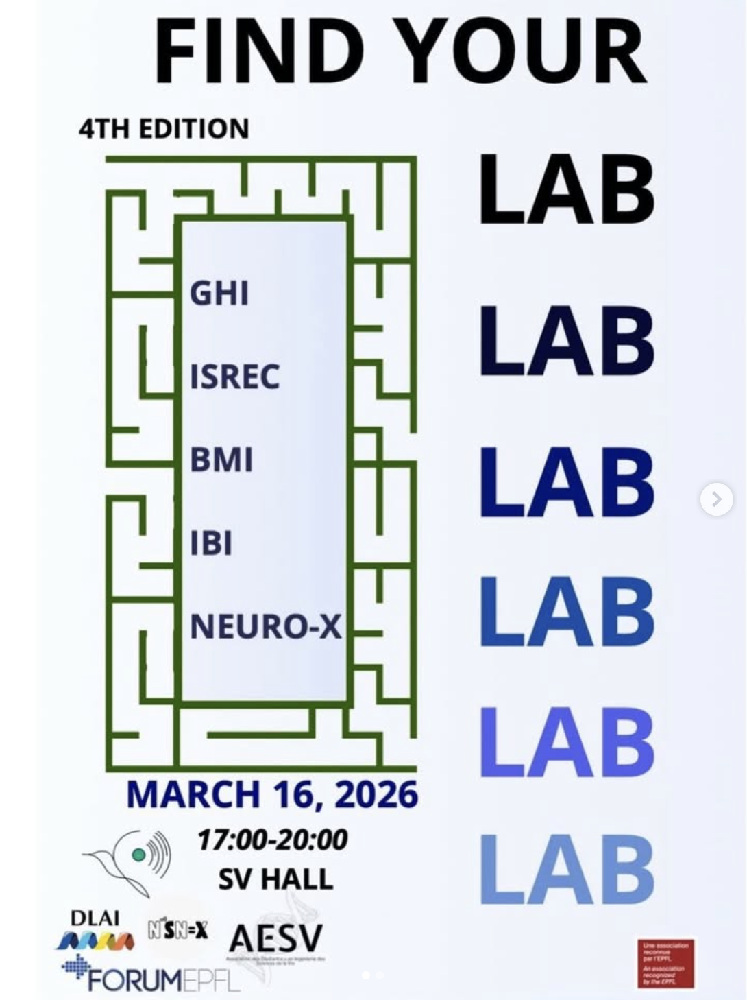
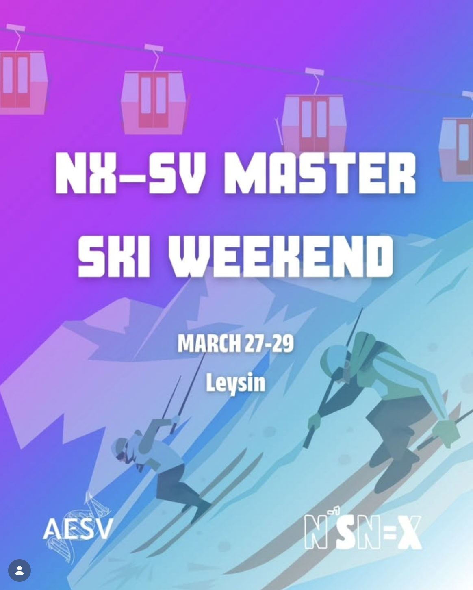
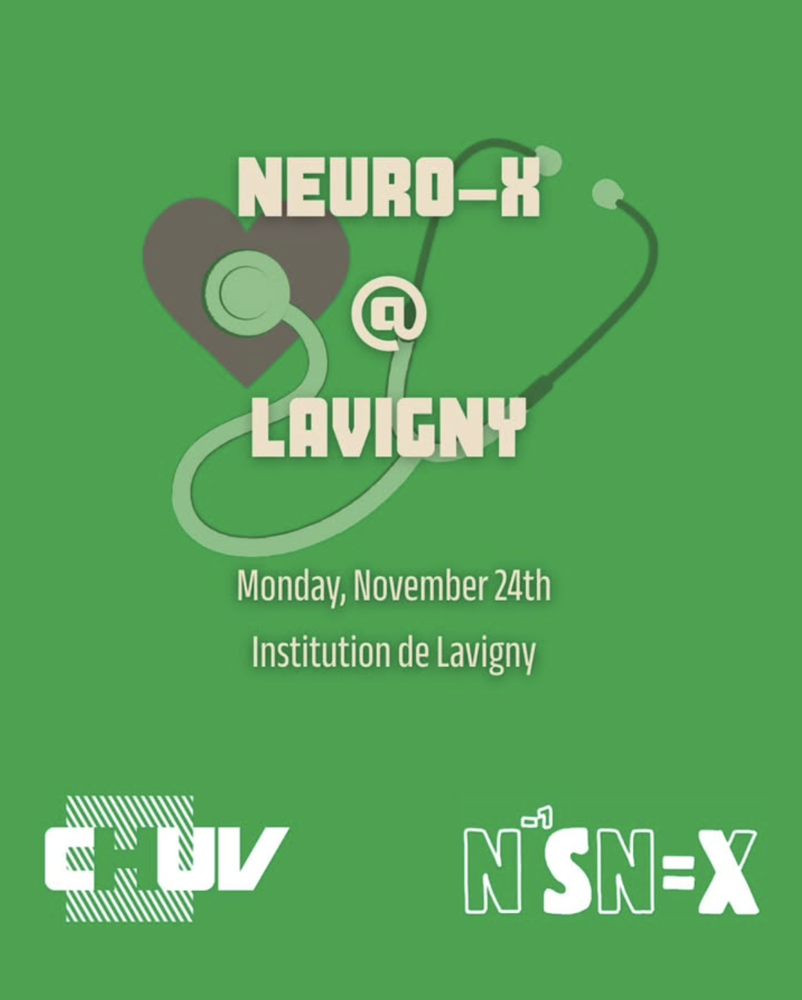
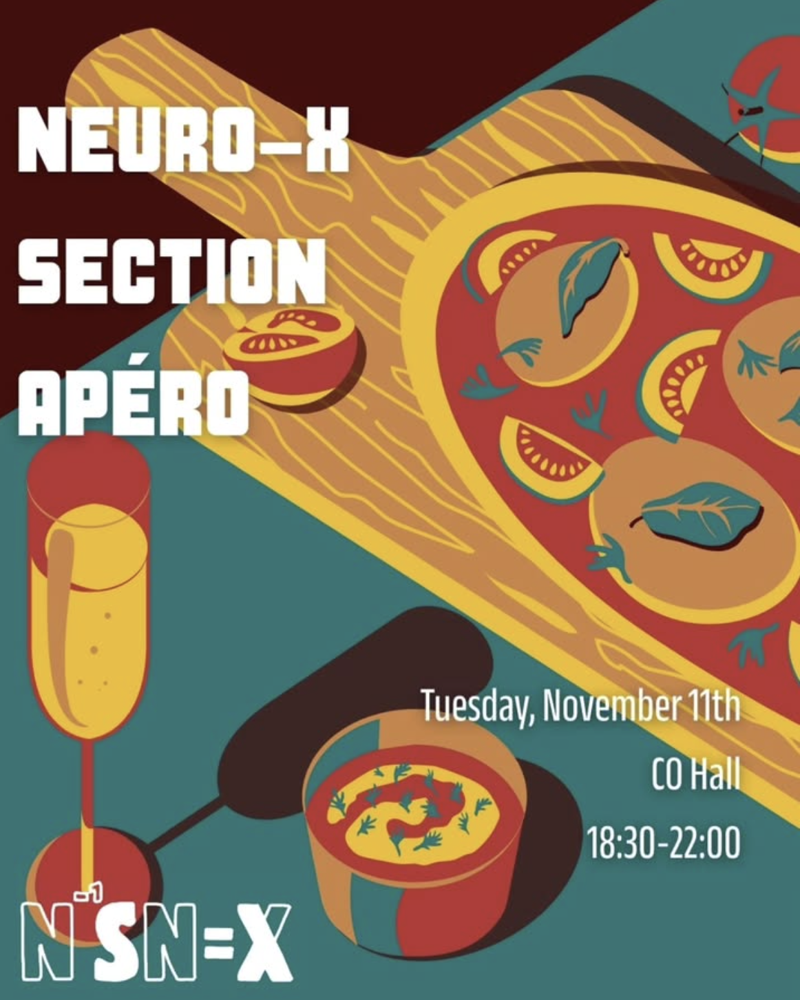

Discover our upcoming and past activities designed to bring the Neuro-X community together.
Neuro-X Section Meal 🍽️✨
We are pleased to invite all members of the section: Master’s and Minor’s students, labs, administration, PhD candidates, and Professors. Come together for a warm and friendly evening featuring a relaxed apéro followed by a delicious vegetarian dinner prepared by L’Ornithorynque, with a homemade dessert baked with love by the association 💜
🗓️ Date: Tuesday, April 14th
🕒 Time: 18:30 – 21:30
📍 Location: Ornithorynque, SV Cafeteria (EPFL main campus, Ecublens)
💸 Pricing: Students: 10 CHF | Others: 16 CHF
🎟️ A tombola will take place during the evening: join for a chance to win amazing prizes while supporting your student faculty association 🤝
👉 Please sign up to confirm your attendance and pay via the QR code at the end of the form.
🗓️ Deadline to register: April 8th, 23:59.
💸 Missed the deadline? Tickets will also be available in cash at the Section Meal.
❤️ All proceeds will help us organize even more events and activities, so feel free to share with your friends! Good luck! 🍀
Past Events
Find Your Lab 🔬
In collaboration with AESV, the "Find Your Lab" evening allowed students to dive deep into the diversity of research labs across the SV and Neuro-X sections. The event kicked off with insightful institute introductions in CO2, paving the way for a vibrant poster session and apéro in the SV Hall.
Participants explored potential Bachelor and Master project opportunities while enjoying the unique chance to converse directly with PhD candidates, researchers, and professors in a relaxed, engaging atmosphere.

Master Ski Weekend 🎿
The highly anticipated very first edition of the Master Ski Weekend for SV and Neuro-X students took place in the beautiful resort of Leysin! This unforgettable weekend getaway gave students the perfect opportunity to celebrate the approaching end of the semester.
The action-packed schedule featured full days of skiing on the snowy slopes, lively evening parties, and plenty of other fun group activities that helped strengthen the bonds within our incredible student community.

NeuroRehab Research Center 🧠
Our students had the exclusive opportunity to visit the NeuroRehab Research Center at the Hôpital de Lavigny. This immersive excursion provided a fascinating introduction to current research and ongoing student projects in the field of clinical neuroscience.
The comprehensive program included highly informative short presentations by leading researchers in translational neuroscience, followed by an eye-opening guided tour through their state-of-the-art research laboratories and innovative therapy facilities.

Section Apéro 🍁
To welcome the autumn season, we hosted our annual Neuro-X Section Apéro in the CO Hall. It was a fantastic evening dedicated to bringing our fellow students together outside the classroom!
The event provided the ideal setting to unwind with great food, refreshing drinks, and relaxed conversations. It was wonderful to see so many familiar and new faces mingling, sharing experiences, and building a stronger sense of community to kick off the semester in the best way possible.

Board Games Night 🎲
Welcoming everyone back from a well-deserved break, our cozy Board Games Night turned CM012 into a hub of fun and strategy! Students and their friends gathered around tables to play a wide variety of their favorite classic and modern board games.
With a lively atmosphere, friendly competition, and delicious hot dogs to keep energy levels up, it was the perfect relaxed evening to reconnect, share some laughs, and ease back into the rhythm of the academic year.